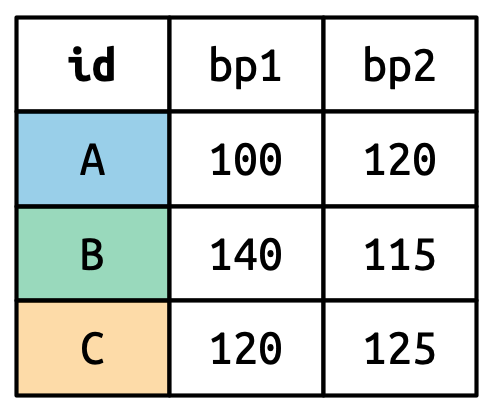
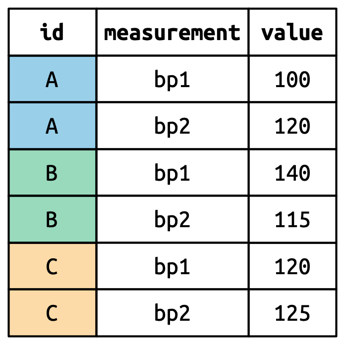

hotels <- read_csv("data/hotels.csv")03 - Manipulation et données Tidy
PRO1036 - Analyse de données scientifiques en R
Tidy data
Tidy data
Happy families are all alike; every unhappy family is unhappy in its own way. – Leo Tolstoy
Qu’est ce que des données Tidy ?
- Chaque variable est une colonne
- Chaque observation est une ligne
- Chaque valeur est une cellule
Tidy data
Exemples
En quoi ces données ne sont pas tidy ?
En quoi ces données ne sont pas tidy ?
En quoi ces données ne sont pas tidy ?
Grammaire
La grammaire de la manipulation de données
Basé sur des fonctions qui correspondent à des verbes permettant de manipuler des dataframes.

- select: Sélectionner une colonne
- arrange: Ordonner les lignes
- slice: Sélectionner des lignes (par les index)
- filter: Sélectionner des lignes selon des critères
- distinct: Filtrer les lignes uniques
- mutate: Ajout de nouvelles variables
- summarise: Réduire variables en valeurs
- group_by: Regrouper des observations selon une variable
- …
Pipes
Pipe
Élément très important dans la syntaxe de la manipulation de données
En programmation, un pipe permet de passer de l’information d’un processus à un autre.
Imaginons le processus suivant: Trouver les clés, démarrer la voiture, conduire au travail et se garer.
park(drive(start_car(find(keys)), to = "work"))keys %>%
find() %>%
start_car() %>%
drive(to = "work") %>%
park()
Dataset
Data: Réservations d’hôtels
Données de deux hôtels, un en ville et un en campagne
Chaque ligne représente une réservation
Dataset créé pour prédire les chances qu’une réservation soit annulée (Antonio et al., 2019)
Source: TidyTuesday
Les variables
names(hotels) [1] "hotel" "is_canceled"
[3] "lead_time" "arrival_date_year"
[5] "arrival_date_month" "arrival_date_week_number"
[7] "arrival_date_day_of_month" "stays_in_weekend_nights"
[9] "stays_in_week_nights" "adults"
[11] "children" "babies"
[13] "meal" "country"
[15] "market_segment" "distribution_channel"
[17] "is_repeated_guest" "previous_cancellations"
[19] "previous_bookings_not_canceled" "reserved_room_type"
[21] "assigned_room_type" "booking_changes"
[23] "deposit_type" "agent"
[25] "company" "days_in_waiting_list"
[27] "customer_type" "adr"
[29] "required_car_parking_spaces" "total_of_special_requests"
[31] "reservation_status" "reservation_status_date" Glimpse
glimpse(hotels)Rows: 119,390
Columns: 32
$ hotel <chr> "Resort Hotel", "Resort Hotel", "Resort…
$ is_canceled <dbl> 0, 0, 0, 0, 0, 0, 0, 0, 1, 1, 1, 0, 0, …
$ lead_time <dbl> 342, 737, 7, 13, 14, 14, 0, 9, 85, 75, …
$ arrival_date_year <dbl> 2015, 2015, 2015, 2015, 2015, 2015, 201…
$ arrival_date_month <chr> "July", "July", "July", "July", "July",…
$ arrival_date_week_number <dbl> 27, 27, 27, 27, 27, 27, 27, 27, 27, 27,…
$ arrival_date_day_of_month <dbl> 1, 1, 1, 1, 1, 1, 1, 1, 1, 1, 1, 1, 1, …
$ stays_in_weekend_nights <dbl> 0, 0, 0, 0, 0, 0, 0, 0, 0, 0, 0, 0, 0, …
$ stays_in_week_nights <dbl> 0, 0, 1, 1, 2, 2, 2, 2, 3, 3, 4, 4, 4, …
$ adults <dbl> 2, 2, 1, 1, 2, 2, 2, 2, 2, 2, 2, 2, 2, …
$ children <dbl> 0, 0, 0, 0, 0, 0, 0, 0, 0, 0, 0, 0, 0, …
$ babies <dbl> 0, 0, 0, 0, 0, 0, 0, 0, 0, 0, 0, 0, 0, …
$ meal <chr> "BB", "BB", "BB", "BB", "BB", "BB", "BB…
$ country <chr> "PRT", "PRT", "GBR", "GBR", "GBR", "GBR…
$ market_segment <chr> "Direct", "Direct", "Direct", "Corporat…
$ distribution_channel <chr> "Direct", "Direct", "Direct", "Corporat…
$ is_repeated_guest <dbl> 0, 0, 0, 0, 0, 0, 0, 0, 0, 0, 0, 0, 0, …
$ previous_cancellations <dbl> 0, 0, 0, 0, 0, 0, 0, 0, 0, 0, 0, 0, 0, …
$ previous_bookings_not_canceled <dbl> 0, 0, 0, 0, 0, 0, 0, 0, 0, 0, 0, 0, 0, …
$ reserved_room_type <chr> "C", "C", "A", "A", "A", "A", "C", "C",…
$ assigned_room_type <chr> "C", "C", "C", "A", "A", "A", "C", "C",…
$ booking_changes <dbl> 3, 4, 0, 0, 0, 0, 0, 0, 0, 0, 0, 0, 0, …
$ deposit_type <chr> "No Deposit", "No Deposit", "No Deposit…
$ agent <chr> "NULL", "NULL", "NULL", "304", "240", "…
$ company <chr> "NULL", "NULL", "NULL", "NULL", "NULL",…
$ days_in_waiting_list <dbl> 0, 0, 0, 0, 0, 0, 0, 0, 0, 0, 0, 0, 0, …
$ customer_type <chr> "Transient", "Transient", "Transient", …
$ adr <dbl> 0.00, 0.00, 75.00, 75.00, 98.00, 98.00,…
$ required_car_parking_spaces <dbl> 0, 0, 0, 0, 0, 0, 0, 0, 0, 0, 0, 0, 0, …
$ total_of_special_requests <dbl> 0, 0, 0, 0, 1, 1, 0, 1, 1, 0, 0, 0, 3, …
$ reservation_status <chr> "Check-Out", "Check-Out", "Check-Out", …
$ reservation_status_date <date> 2015-07-01, 2015-07-01, 2015-07-02, 20…Select
Sélection d’une variable
Nous allons sélectionner la variable lead_time, qui représente le temps entre la date de réservation et la date d’arrivée
select(hotels, lead_time)# A tibble: 119,390 × 1
lead_time
<dbl>
1 342
2 737
3 7
4 13
5 14
6 14
7 0
8 9
9 85
10 75
# ℹ 119,380 more rowsÉquivalent:
hotels %>%
select(lead_time)Sélection de plusieurs variables
Nous allons maintenant ajouter la variable hotel qui indique s’il s’agit d’un hotel de ville ou un resort
hotels %>%
select(hotel, lead_time)# A tibble: 119,390 × 2
hotel lead_time
<chr> <dbl>
1 Resort Hotel 342
2 Resort Hotel 737
3 Resort Hotel 7
4 Resort Hotel 13
5 Resort Hotel 14
6 Resort Hotel 14
7 Resort Hotel 0
8 Resort Hotel 9
9 Resort Hotel 85
10 Resort Hotel 75
# ℹ 119,380 more rowsExclusion de variables
# A tibble: 119,390 × 2
hotel lead_time
<chr> <dbl>
1 Resort Hotel 342
2 Resort Hotel 737
3 Resort Hotel 7
4 Resort Hotel 13
5 Resort Hotel 14
6 Resort Hotel 14
7 Resort Hotel 0
8 Resort Hotel 9
9 Resort Hotel 85
10 Resort Hotel 75
# ℹ 119,380 more rowsSélection d’une plage de variables
hotels %>%
select(hotel:arrival_date_month)# A tibble: 119,390 × 5
hotel is_canceled lead_time arrival_date_year arrival_date_month
<chr> <dbl> <dbl> <dbl> <chr>
1 Resort Hotel 0 342 2015 July
2 Resort Hotel 0 737 2015 July
3 Resort Hotel 0 7 2015 July
4 Resort Hotel 0 13 2015 July
5 Resort Hotel 0 14 2015 July
6 Resort Hotel 0 14 2015 July
7 Resort Hotel 0 0 2015 July
8 Resort Hotel 0 9 2015 July
9 Resort Hotel 1 85 2015 July
10 Resort Hotel 1 75 2015 July
# ℹ 119,380 more rowsSélection de variables selon une condition
hotels %>%
select(starts_with("arrival"))# A tibble: 119,390 × 4
arrival_date_year arrival_date_month arrival_date_week_number
<dbl> <chr> <dbl>
1 2015 July 27
2 2015 July 27
3 2015 July 27
4 2015 July 27
5 2015 July 27
6 2015 July 27
7 2015 July 27
8 2015 July 27
9 2015 July 27
10 2015 July 27
# ℹ 119,380 more rows
# ℹ 1 more variable: arrival_date_day_of_month <dbl>Sélection de variables selon une condition
hotels %>%
select(ends_with("type"))# A tibble: 119,390 × 4
reserved_room_type assigned_room_type deposit_type customer_type
<chr> <chr> <chr> <chr>
1 C C No Deposit Transient
2 C C No Deposit Transient
3 A C No Deposit Transient
4 A A No Deposit Transient
5 A A No Deposit Transient
6 A A No Deposit Transient
7 C C No Deposit Transient
8 C C No Deposit Transient
9 A A No Deposit Transient
10 D D No Deposit Transient
# ℹ 119,380 more rowsAutres conditions
- starts_with(): Commence par un préfix
- ends_with(): Termine par un suffix
- contains(): Contient une certaine chaine de caractères
- num_range(): Match un certain range de nombres
- one_of(): Match les variables font parties d’une liste
- everything(): Match les variable qui contiennet tous les éléments de la liste
- last_col(): Sélectionne la dernière variable (possibilité d’indiquer un offset)
- matches(): Match une expression régulière
Pour avoir plus d’information sur ces fonctions, utilisez l’aide ?... !
Arrange
Ordonner les lignes
Par défaut, les lignes sont arrangées en ordre croissant. Il est possible de préciser l’ordre décroissant avec desc()
Slice
Sélection de lignes
La sélection se base sur le numéro de ligne
# A tibble: 5 × 32
hotel is_canceled lead_time arrival_date_year arrival_date_month
<chr> <dbl> <dbl> <dbl> <chr>
1 Resort Hotel 0 342 2015 July
2 Resort Hotel 0 737 2015 July
3 Resort Hotel 0 7 2015 July
4 Resort Hotel 0 13 2015 July
5 Resort Hotel 0 14 2015 July
# ℹ 27 more variables: arrival_date_week_number <dbl>,
# arrival_date_day_of_month <dbl>, stays_in_weekend_nights <dbl>,
# stays_in_week_nights <dbl>, adults <dbl>, children <dbl>, babies <dbl>,
# meal <chr>, country <chr>, market_segment <chr>,
# distribution_channel <chr>, is_repeated_guest <dbl>,
# previous_cancellations <dbl>, previous_bookings_not_canceled <dbl>,
# reserved_room_type <chr>, assigned_room_type <chr>, …filter
Sélection de lignes
La sélection se base sur des conditions
# A tibble: 79,330 × 32
hotel is_canceled lead_time arrival_date_year arrival_date_month
<chr> <dbl> <dbl> <dbl> <chr>
1 City Hotel 0 6 2015 July
2 City Hotel 1 88 2015 July
3 City Hotel 1 65 2015 July
4 City Hotel 1 92 2015 July
5 City Hotel 1 100 2015 July
6 City Hotel 1 79 2015 July
7 City Hotel 0 3 2015 July
8 City Hotel 1 63 2015 July
9 City Hotel 1 62 2015 July
10 City Hotel 1 62 2015 July
# ℹ 79,320 more rows
# ℹ 27 more variables: arrival_date_week_number <dbl>,
# arrival_date_day_of_month <dbl>, stays_in_weekend_nights <dbl>,
# stays_in_week_nights <dbl>, adults <dbl>, children <dbl>, babies <dbl>,
# meal <chr>, country <chr>, market_segment <chr>,
# distribution_channel <chr>, is_repeated_guest <dbl>,
# previous_cancellations <dbl>, previous_bookings_not_canceled <dbl>, …Conditions multiples
On veut les réservations sans adultes ET plus qu’un enfant.
Conditions multiples
On veut les réservations sans adultes ET, plus qu’un enfant OU plus qu’un bébé.
Les opérations logiques
| Opérateur | Définition | Opérateur | Définition |
|---|---|---|---|
< |
plus petit que | x | y |
x OU y |
<= |
plus petit ou égal | is.na(x) |
test si x est NA |
> |
plus grand que | !is.na(x) |
test si x est différent de NA |
>= |
plus grand ou égal | x %in% y |
test si x est dans y |
== |
égal à | !(x %in% y) |
test si x n’est pas dans y |
!= |
différent de | !x |
non x |
x & y |
x ET y |
distinct et count
Ne garder que les lignes uniques
# A tibble: 14 × 2
hotel market_segment
<chr> <chr>
1 City Hotel Aviation
2 City Hotel Complementary
3 City Hotel Corporate
4 City Hotel Direct
5 City Hotel Groups
6 City Hotel Offline TA/TO
7 City Hotel Online TA
8 City Hotel Undefined
9 Resort Hotel Complementary
10 Resort Hotel Corporate
11 Resort Hotel Direct
12 Resort Hotel Groups
13 Resort Hotel Offline TA/TO
14 Resort Hotel Online TA Compter le nombre de lignes
Par défaut, le résultat est trié par ordre alphabétique :
En triant par fréquence d’apparition :
count puis arrange
Compter sur plusieurs variables
Attention à l’ordre…
# A tibble: 14 × 3
hotel market_segment n
<chr> <chr> <int>
1 City Hotel Aviation 237
2 City Hotel Complementary 542
3 City Hotel Corporate 2986
4 City Hotel Direct 6093
5 City Hotel Groups 13975
6 City Hotel Offline TA/TO 16747
7 City Hotel Online TA 38748
8 City Hotel Undefined 2
9 Resort Hotel Complementary 201
10 Resort Hotel Corporate 2309
11 Resort Hotel Direct 6513
12 Resort Hotel Groups 5836
13 Resort Hotel Offline TA/TO 7472
14 Resort Hotel Online TA 17729# A tibble: 14 × 3
market_segment hotel n
<chr> <chr> <int>
1 Aviation City Hotel 237
2 Complementary City Hotel 542
3 Complementary Resort Hotel 201
4 Corporate City Hotel 2986
5 Corporate Resort Hotel 2309
6 Direct City Hotel 6093
7 Direct Resort Hotel 6513
8 Groups City Hotel 13975
9 Groups Resort Hotel 5836
10 Offline TA/TO City Hotel 16747
11 Offline TA/TO Resort Hotel 7472
12 Online TA City Hotel 38748
13 Online TA Resort Hotel 17729
14 Undefined City Hotel 2mutate
Ajout de nouvelles variables
hotels %>%
mutate(little_ones = children + babies) %>%
select(children, babies, little_ones) %>%
arrange(desc(little_ones))# A tibble: 119,390 × 3
children babies little_ones
<dbl> <dbl> <dbl>
1 10 0 10
2 0 10 10
3 0 9 9
4 2 1 3
5 2 1 3
6 2 1 3
7 3 0 3
8 2 1 3
9 2 1 3
10 3 0 3
# ℹ 119,380 more rowsCombinaison des verbes
# A tibble: 12 × 3
hotel little_ones n
<chr> <dbl> <int>
1 City Hotel 0 73923
2 City Hotel 1 3263
3 City Hotel 2 2056
4 City Hotel 3 82
5 City Hotel 9 1
6 City Hotel 10 1
7 City Hotel NA 4
8 Resort Hotel 0 36131
9 Resort Hotel 1 2183
10 Resort Hotel 2 1716
11 Resort Hotel 3 29
12 Resort Hotel 10 1hotels %>%
mutate(
little_ones = children + babies) %>%
count(hotel, little_ones) %>%
mutate(prop = n / sum(n))# A tibble: 12 × 4
hotel little_ones n prop
<chr> <dbl> <int> <dbl>
1 City Hotel 0 73923 0.619
2 City Hotel 1 3263 0.0273
3 City Hotel 2 2056 0.0172
4 City Hotel 3 82 0.000687
5 City Hotel 9 1 0.00000838
6 City Hotel 10 1 0.00000838
7 City Hotel NA 4 0.0000335
8 Resort Hotel 0 36131 0.303
9 Resort Hotel 1 2183 0.0183
10 Resort Hotel 2 1716 0.0144
11 Resort Hotel 3 29 0.000243
12 Resort Hotel 10 1 0.00000838summarize et group by
summarize
Permet de faire des calculs sur des variables
# A tibble: 1 × 1
mean_adr
<dbl>
1 102.summarize() change complètement le dataframe, transforme les lignes en une unique statistique et enlève les colonnes inutiles
Attention à la notation
Nous pouvons être fainéant et laisser summarize() créer le nom des colonnes mais ce n’est pas très propre.
❌
hotels %>%
summarise(mean(adr))# A tibble: 1 × 1
`mean(adr)`
<dbl>
1 102.✅
hotels %>%
summarise(mean_adr = mean(adr))# A tibble: 1 × 1
mean_adr
<dbl>
1 102.group_by
Permet de regrouper des lignes selon une variable et de faire des opérations sur chaque groupe
Exemple: calcul de fréquences
Les deux blocs de code suivants donnent le résultat ! count() est en faite un group_by() suivi d’un summarize().
hotels %>%
group_by(hotel) %>%
summarise(n = n())# A tibble: 2 × 2
hotel n
<chr> <int>
1 City Hotel 79330
2 Resort Hotel 40060hotels %>%
count(hotel)# A tibble: 2 × 2
hotel n
<chr> <int>
1 City Hotel 79330
2 Resort Hotel 40060Statistiques multiples
Il est possible de calculer plusieurs statistiques d’un coup.
hotels %>%
summarise(
min_adr = min(adr),
mean_adr = mean(adr),
median_adr = median(adr),
max_adr = max(adr)
)# A tibble: 1 × 4
min_adr mean_adr median_adr max_adr
<dbl> <dbl> <dbl> <dbl>
1 -6.38 102. 94.6 5400Tidying data
Ce qu’on a…
# A tibble: 2 × 4
customer_id item_1 item_2 item_3
<dbl> <chr> <chr> <chr>
1 1 bread milk banana
2 2 milk toilet paper <NA> Ce qu’on veut…
# A tibble: 6 × 3
customer_id item_no item
<dbl> <chr> <chr>
1 1 item_1 bread
2 1 item_2 milk
3 1 item_3 banana
4 2 item_1 milk
5 2 item_2 toilet paper
6 2 item_3 <NA> Pour Tidyer: Tidyr

Tidyr permet de transformer les données pour les Tidy :
- Faire pivoter les données
- Séparer ou combiner des colonnes
- Imbriquer/Désimbriquer des colonnes
- Préciser commenter traiter les
NA
Pivoter les données

Wide vs Long
Forme large :

Forme longue :

Source: (Wickham et al., 2023, chap. 5)
Wide vs Long
Wide
Plus de colonnes
# A tibble: 2 × 4
customer_id item_1 item_2 item_3
<dbl> <chr> <chr> <chr>
1 1 bread milk banana
2 2 milk toilet paper <NA> Long
Plus de lignes
# A tibble: 6 × 3
customer_id item_no item
<dbl> <chr> <chr>
1 1 item_1 bread
2 1 item_2 milk
3 1 item_3 banana
4 2 item_1 milk
5 2 item_2 toilet paper
6 2 item_3 <NA> pivot_longer()
- data : Comme d’habitude
- cols : Colonne à pivoter
- names_to : Nom de la colonne où les variables vont être envoyées
- values_to : Nom de la colonne où les valeurs vont être envoyées
pivot_longer(
data,
cols,
names_to = "name",
values_to = "value"
)
Customer \(\rightarrow\) purchases
purchases <- customers %>%
pivot_longer(
cols = item_1:item_3, # variables item_1 à item_3
names_to = "item_no", # Noms des colonnes -> dans une nouvelle colonne item_no
values_to = "item" # valeurs pour chaque colonne -> dans une nouvelle colonne item
)
purchases# A tibble: 6 × 3
customer_id item_no item
<dbl> <chr> <chr>
1 1 item_1 bread
2 1 item_2 milk
3 1 item_3 banana
4 2 item_1 milk
5 2 item_2 toilet paper
6 2 item_3 <NA> pivot_wider()
- data : Comme d’habitude
- names_from : Colonne contenant les noms de colonnes
- values_from : Colonne contenant les valeurs
purchases %>%
pivot_wider(
names_from = item_no,
values_from = item
)# A tibble: 2 × 4
customer_id item_1 item_2 item_3
<dbl> <chr> <chr> <chr>
1 1 bread milk banana
2 2 milk toilet paper <NA> Références
Antonio, N., de Almeida, A. and Nunes, L. (2019). Hotel booking demand datasets. Data in Brief, 22, 41–49. https://doi.org/10.1016/j.dib.2018.11.126
Wickham, H., Çetinkaya-Rundel, M. and Grolemund, G. (2023). R for Data Science (2nd ed.). O’Reilly Media, Inc.